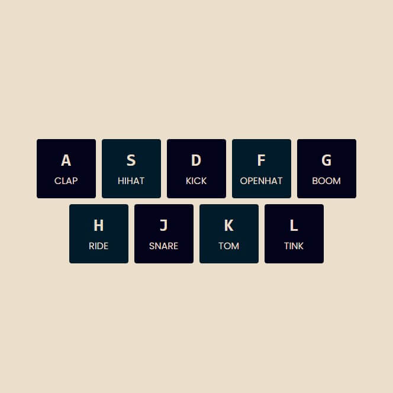

30 JavaScript Challenges
- #1 - Drumkit 
- #2 - CSS + JS Clock
- #3 - CSS Vars
- #4 - Array Cardio 1
- #5 - Flex Panels Gallery
- #6 - Ajax Type Ahead
- #7 - Array Cardio 2
- #8 - HTML5 and Canvas
- #9 - 14 must know Tricks
- #10 - Hold shift to multiple check
- #11 - Custom HTML5 Video Player
- #12 - Key Sequence Detection (KONAMI Code)
- #13 - Slide in on scroll
- #14 - Object and Arrays - Reference vs Copy
- #15 - LocalStorage and Event
- #16 - CSS Text Shadow Mouse Move Effect
- #17 - Sorting Band Names Without Articles
- #18 - Tally String Times With Reduce
- #19 - Unreal Webcam Fun
- #20 - Native Speech Recognition
- #21 - Geolocation based Speedometer and Compass
- #22 - Follow Along Links
- #23 - Speech Synthesis
- #24 - Sticky Nav
- #25 - Event Capture, Propagation, Bubbling and Once
- #26 - Stripe Follow Along Dropdown
- #27 - Click and Drag to Scroll
- #28 - Video Speed Controller UI
- #29 - Countdown Clock
- #30 - Whack a Mole Game